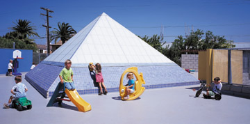
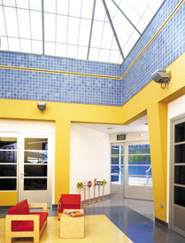

In California, the law requires that new preschools must have a ratio of 75 square feet per child for outdoor space to 35 square feet per child for indoor program areas. In Manhattan Beach, where land is at a premium, building a new preschool that would comply would not only be very costly but also impossible in many neighborhoods because of the scarcity of available real estate. It took creative planning on the part of Studio 9one2, along with some negotiating with the California Department of Health Services, to allow LaMarina Preschool to be built on an undersized lot; the total space required for a traditional center would be 9,900 square feet (LaMarina Preschool is situated on an 8,000-square-foot site).
"It's a unique approach to say the least," says Patrick Killen, AIA, of Studio 9one2. "To make it work, we set most of the play area on top of the school." Grassy terraces and a ramp bring the children to the colorful outdoor play yard. The architects added colored solid geometric forms to contrast the blandness of the stucco and concrete-block building and gray concrete around the perimeter of the school. The play area wraps around a translucent pyramidal skylight.
The main focus of the semi-subterranean structure is the Kalwall pyramid skylight. "We've used Kalwall in other projects and chose it for LaMarina because it's durable, shatterproof and non-threatening for children, since it's on the play deck," says Killen. Because of Kalwall's structural integrity and high load capacity, there is no need for guard rails. The system can be safely walked on. Outside, the skylight acts as one of the simple shapes that fill the yard. But inside, the Kalwall translucent panels fill the interior with balanced, natural daylight. "The Kalwall skylight identifies the center of the building. It sits atop the entry/reading space area. It's a welcoming space with soft, filtered light and it's great for reading and interacting as it's filled with natural daylight."
Kalwall offers light transmission ranges from 3% to 74%. In this structure, the light transmission is 15%. Kalwall's translucent, diffuse-light-transmitting property delivers the best quality of natural daylight. Harsh glare, hot spots and shadows often associated with traditional glazing are eliminated and harmful ultraviolet rays are filtered out. Even on cloudy days, the panels transmit an even balance of usable natural light. 
Kalwall is the most highly insulating, diffuse-light-transmitting system available and is known for its museum-quality natural lighting and superior structural integrity. The system is a structural composite sandwich panel formed by permanently bonding specially formulated fiberglass-reinforced translucent faces to a grid core constructed of interlocked, structural I-beams.
"In using Kalwall, we were able to take advantage of its insulating quality," adds Killen. Kalwall lets in the light but keeps out the heat. The translucent sandwich panels are factory laminated under a controlled process of heat and pressure. During this factory manufacturing process, the panels can be infilled with various densities of specialized translucent insulation to minimize heat/cold air loss and gain. Kalwall, with its captive fiberglass insulation, permits the control and transfer of light without overheating from the sun.
The HVAC problems inherent with glass skyroofs are eliminated as the Kalwall system controls solar heat transmission. In the standard 2-3/4" (70 mm) panel, U-factor options range from .53 to .18 and shading coefficients from 1.0 to under 0.04. Kalwall's thermally broken panels deliver even greater energy efficiency and the ultimate condensation control with a U-factor as low as .10 (R10) as tested and/or computer modeled according to NFRC test methods as endorsed by the Department of Energy for maximum energy efficiency and reliability. For use in this preschool, the Kalwall panels have a U-factor of .29 and a solar heat gain coefficient of 0.16.
"We made the most of the space we had," says Killen. "The interior space flows from the skylit main reading area. Four classrooms open off the space and exit up the ramp out back to the terraced play yards. We've even added an amphitheater that doubles as an entry. The impact of this new building has been tremendous." When LaMarina rented space from the local school district, they struggled to keep a full quota of children. In their new facility, LaMarina Preschool has a waiting list.
Kalwall Specifications:
For more information, contact:
Bruce Keller
Architect: Studio 9one2 of Hermosa Beach, CA
PRESCHOOL IS A SPECIAL FIT
U-factor: .29 by NFRC
Solar Heat Gain Coefficient: 0.16
Light transmission: 15%
Color: White
Trim: Kalwall Corrosion Resistant Architectural Finish
Kalwall Corporation
1-800-258-9777